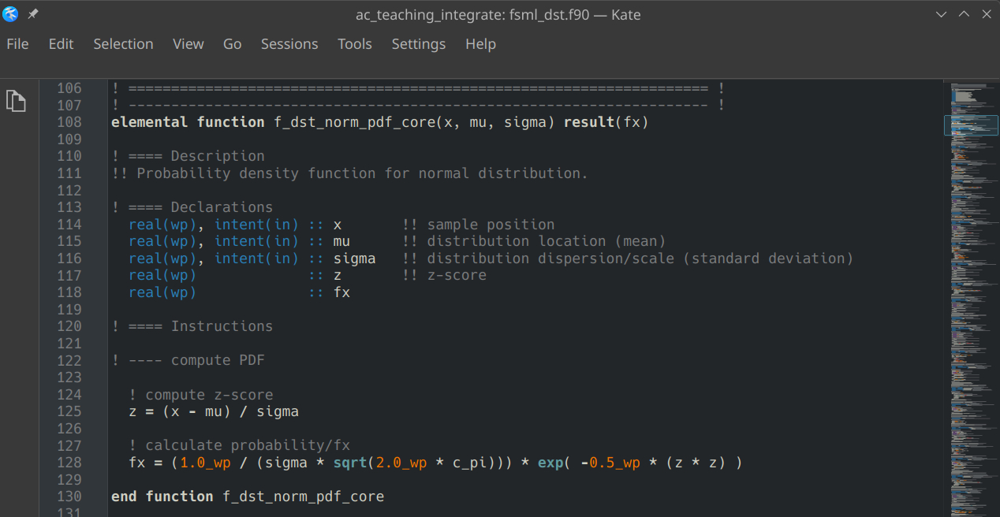
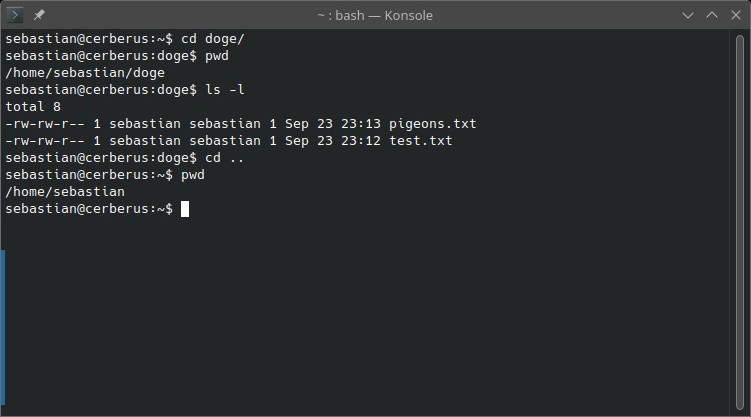

E001 (Fortran) - Getting Started¶
In this exercise, you learn about some basic concepts of programming, commonly used tools, and how to write and execute a script. You may come across some important vocabulary that you are not yet familiar with. We will explore this with modern Fortran (programming language).
Information¶
Topic |
|
|---|---|
Concepts |
|
Skills |
|
Workflow Setup¶
Fortran is a compiled language. Hence, our process will be: write code > compile code > run executable file. This means we will need the following tools to set up our workflow:
We will write our code in a text editor with code-highlighting feature. For demonstration purposes, we will use Kate. However, there are many great editors (e.g., Emacs).

Text editors like Kate support code highlighting, which will make your code much easier to read!¶
We will execute our compiled programme from command line in a terminal emulator (also referred to as console in this document). There are many great options. If you are using any Linux or Unix operating system (incl. MacOS), you will most likely have a terminal emulator already installed. If you’re using Windows, installing Cygwin is recommended. For this tutorial, demonstrations will be done with KDE’s Konsole and bash shell (command-line interpreter). For the exercises here, you do not need to know bash commands well. You only need to know 3 commands:
lslets you view the content of your working directory (the folder you are currently in).ls -lwill list the contents line-by-line.pwd(short for “print working directory”) lets you find out which directory you are in.cdwill change the directory you are working in. It is the equivalent of opening a folder in your file browser. For example: If you are currently in a folderhomethat contains a subfolder nameddoge, you can navigate to the subfolder by typingcd doge. If you want to navigate one folder level up, you simply typecd ...

Konsole is one of many well-established terminal emulators. The image demonstrates some useful bash commands. The commands are written in lines starting with $ and executed by hitting enter. The results of the commands are displayed in the other lines below them.¶
We will compile our code with the gfortran compiler. Additional installation instructions can be found here. The simplest way to compile your Fortran code with gfortran is by typing the following into your terminal emulator:
gfortran [path1]/[code].f90 -o [path2]/[program].exe
./[program].exe
With the command in the first line, you are telling the compiler to compile your script with file name [code] located in the folder [path1] and create an executable file with file name [program] in the folder [path2]. The second line will run your progam. If you are working on a Linux/Unix system, you do not need the .exe file extension, but it may help you identify your executables.
Writing and Compiling a Simple Programme¶
program printing
implicit none
print *, "wow, many print"
end program
Let’s go through the programme in detail:
program printingstarts the programme and gives it the nameprinting.implicit nonetells Fortran that every variable must be explicitly declared. This is an important modern Fortran programming practice.print *writes information to the terminal using Fortran’s default output formatting.end program printingmarks the end of the programme.
Save this as printing.f90 and compile it with:
gfortran printing.f90 -o printing
Here, we are asking for the Fortran code in file printing.f90 to be converted into an execurable file named printing. We can then run it with:
./printing
You can also simply combine the commands in one line using ampersands:
gfortran printing.f90 -o printing && ./printing
The terminal should display:
wow, many print
Note
The Fortran Package Manager (fpm) simplifies workflows and compilations, especially for larger projects. This short tutorial explains how you set up a Fortran project with fpm. It is worth investing a few minutes to familiarise yourself with fpm if you want to use Fortran for the later projects in this course.
Simple Maths¶
Fortran provides arithmetic operators for common mathematical operations.
Operator |
Description |
Example |
|---|---|---|
|
addition |
|
|
subtraction |
|
|
multiplication |
|
|
division |
|
|
exponentiation |
|
Try these expressions in a programme
program maths
implicit none
print *, 20 + 22
print *, 2077 - 93
print *, 578 * 4
print *, 1332 / 2
print *, 16 ** 2
end program maths
The output should contain values corresponding to:
42
1984
2312
666
256
Notice that the type of an expression matters. For example, integer division is different from floating-point division
print *, 5 / 2
print *, 5.0 / 2.0
The first expression uses integers, whereas the second uses real numbers.
Intrinsic Functions¶
Fortran provides many intrinsic functions for common mathematical and programming operations. These functions are built into the language and do not require an external library.
For example, sqrt calculates a square root and sin calculates a sine
program functions
implicit none
print *, sqrt(64.0)
print *, sin(2.0)
end program functions
You can combine functions and expressions. For example
print *, sqrt(16.0 + 48.0)
The expression inside sqrt is evaluated first. Its result is then passed
to sqrt.
Some useful intrinsic mathematical functions include:
sqrt(x)– square rootabs(x)– absolute valuesin(x)– sinecos(x)– cosineexp(x)– exponentiallog(x)– natural logarithm
Variables and Constants¶
A variable stores a value that can change while a programme is running. A constant (a named parameter in Fortran) stores a value that should not change.
For example
program variables
implicit none
real :: x
real, parameter :: scale = 0.5
real :: y
x = sqrt(64.0)
y = scale * x + 2.0
print *, "x =", x
print *, "y =", y
end program variables
The declaration real :: x creates a variable named x that can store a real (floating-point) value.
The declaration real, parameter :: scale = 0.5 creates a named constant. The parameter attribute means that its value cannot be changed later.
Unlike Python, Fortran requires variables to be declared before they are used. This is great, because it makes you think more carefully about what you want to do, and helps prevent problems down the line.
Data Types¶
A data type describes what kind of value a variable can store. Common intrinsic Fortran types include:
Type |
Description |
Example |
|---|---|---|
|
whole numbers |
|
|
floating-point numbers |
|
|
logical values |
|
|
text |
|
For example
integer :: year
real :: temperature
logical :: is_ready
character(len=20) :: name
year = 2026
temperature = 20.77
is_ready = .true.
name = "Fortran"
For numerical scientific computing, it is good practice to be deliberate
about numerical precision. For this introductory exercise, ordinary
real values are sufficient.
Modules¶
Fortran uses modules to group related declarations, procedures, and constants. Modules are an important mechanism for structuring larger programmes. For a larger programme, you would normally move reusable functionality into modules and use procedures (functions and subroutines) rather than placing all calculations in the main programme.
The following example defines a module containing a constant and a function
module geometry
implicit none
real, parameter :: pi = 3.141592653589793
contains
real function circle_area(radius)
real, intent(in) :: radius
circle_area = pi * radius ** 2
end function circle_area
end module geometry
A programme can then use the module with use
program module_example
use geometry, only: circle_area
implicit none
real :: area
area = circle_area(2.0)
print *, "area =", area
end program module_example
The only clause makes it explicit which module entities the programme uses.
This is a useful habit in larger Fortran projects because it makes
dependencies easier to see.
The module must be compiled before, or together with, the programme that uses it. A simple approach is to compile both source files in a single command:
gfortran geometry.f90 module_example.f90 -o module_example
Your Task¶
Now you have covered enough of the basics of practical programming to start writing your own modern Fortran programme.
Write and submit a programme that:
calculates and displays the circumference and area of a circle with a radius of 2;
uses mathematical operators;
uses at least one intrinsic mathematical function;
declares and uses variables;
declares and uses at least one named constant with
parameter;combines functions and/or expressions somewhere in the programme;
includes comments for every executable instruction in the programme.
Save your programme as e001.f90 and submit it via Moodle.
Comments¶
Comments are text in the source code that are ignored by the compiler. In modern Fortran, a comment begins with
!. For example:Comments are useful for explaining why code exists and for documenting assumptions. For this exercise, every executable instruction in your submitted programme should have an explanatory comment.